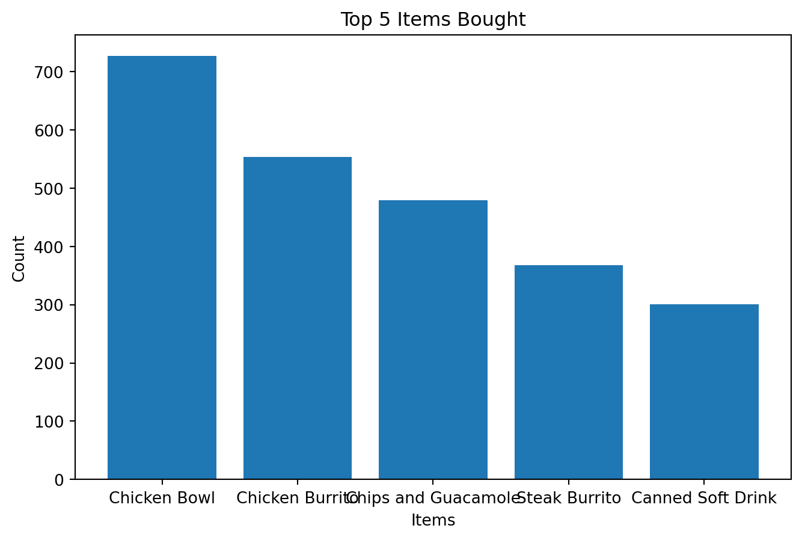
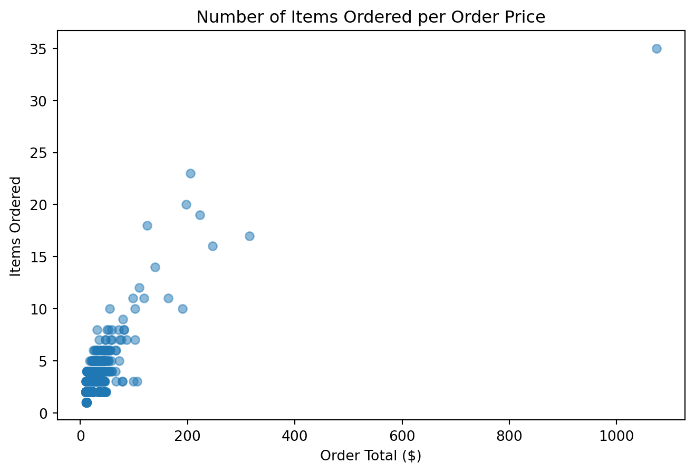
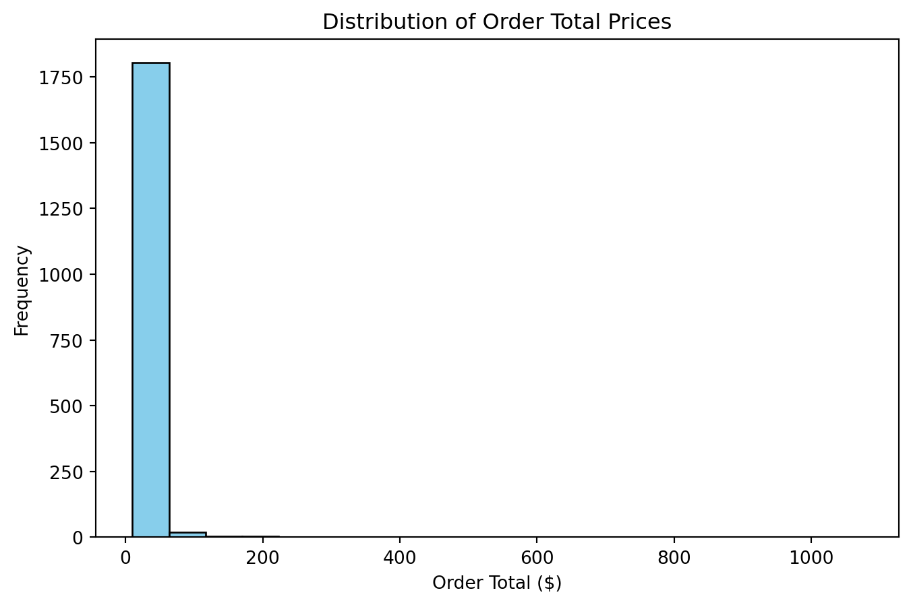

The following Python code demonstrates how to explore and analyze the Chipotle dataset to extract meaningful insights.
import pandas as pd# Step 1: Import the necessary libraries# Step 2: Import the dataset from the URLurl ="https://raw.githubusercontent.com/justmarkham/DAT8/master/data/chipotle.tsv"# Step 3: Assign it to a variable called chipochipo = pd.read_csv(url, sep='\t')# Step 4: See the first 10 entriesprint("First 10 entries:")print(chipo.head(10))# Step 5: What is the number of observations in the dataset?print("\nNumber of observations:")print(chipo.shape[0])# Step 6: What is the number of columns in the dataset?print("\nNumber of columns:")print(chipo.shape[1])# Step 7: Print the name of all the columnsprint("\nColumn names:")print(chipo.columns)# Step 8: How is the dataset indexed?print("\nDataset index:")print(chipo.index)# Step 9: Which was the most-ordered item?most_ordered_item = chipo.groupby('item_name').sum().sort_values('quantity', ascending=False).head(1)print("\nMost ordered item:")print(most_ordered_item)# Step 10: For the most-ordered item, how many items were ordered?print("\nNumber of most ordered items:")print(most_ordered_item['quantity'].values[0])# Step 11: What was the most ordered item in the choice_description column?most_ordered_choice = chipo['choice_description'].value_counts().idxmax()print("\nMost ordered choice description:")print(most_ordered_choice)# Step 12: How many items were ordered in total?total_items_ordered = chipo['quantity'].sum()print("\nTotal items ordered:")print(total_items_ordered)# Step 13: Turn the item price into a float# Step 13.a: Check the item price typeprint("\nItem price type before conversion:")print(chipo['item_price'].dtype)# Step 13.b: Create a lambda function and change the type of item pricechipo['item_price'] = chipo['item_price'].str.replace('$', '').astype(float)# Step 13.c: Check the item price typeprint("\nItem price type after conversion:")print(chipo['item_price'].dtype)# Step 14: How much was the revenue for the period in the dataset?revenue = (chipo['quantity'] * chipo['item_price']).sum()print("\nTotal revenue:")print(revenue)# Step 15: How many orders were made in the period?unique_orders = chipo['order_id'].nunique()print("\nTotal orders:")print(unique_orders)# Step 16: What is the average revenue amount per order?average_revenue_per_order = revenue / unique_ordersprint("\nAverage revenue per order:")print(average_revenue_per_order)# Step 17: How many different items are sold?unique_items = chipo['item_name'].nunique()print("\nNumber of unique items sold:")print(unique_items)
First 10 entries:
order_id quantity item_name \
0 1 1 Chips and Fresh Tomato Salsa
1 1 1 Izze
2 1 1 Nantucket Nectar
3 1 1 Chips and Tomatillo-Green Chili Salsa
4 2 2 Chicken Bowl
5 3 1 Chicken Bowl
6 3 1 Side of Chips
7 4 1 Steak Burrito
8 4 1 Steak Soft Tacos
9 5 1 Steak Burrito
choice_description item_price
0 NaN $2.39
1 [Clementine] $3.39
2 [Apple] $3.39
3 NaN $2.39
4 [Tomatillo-Red Chili Salsa (Hot), [Black Beans... $16.98
5 [Fresh Tomato Salsa (Mild), [Rice, Cheese, Sou... $10.98
6 NaN $1.69
7 [Tomatillo Red Chili Salsa, [Fajita Vegetables... $11.75
8 [Tomatillo Green Chili Salsa, [Pinto Beans, Ch... $9.25
9 [Fresh Tomato Salsa, [Rice, Black Beans, Pinto... $9.25
Number of observations:
4622
Number of columns:
5
Column names:
Index(['order_id', 'quantity', 'item_name', 'choice_description',
'item_price'],
dtype='object')
Dataset index:
RangeIndex(start=0, stop=4622, step=1)
Most ordered item:
order_id quantity \
item_name
Chicken Bowl 713926 761
choice_description \
item_name
Chicken Bowl [Tomatillo-Red Chili Salsa (Hot), [Black Beans...
item_price
item_name
Chicken Bowl $16.98 $10.98 $11.25 $8.75 $8.49 $11.25 $8.75 ...
Number of most ordered items:
761
Most ordered choice description:
[Diet Coke]
Total items ordered:
4972
Item price type before conversion:
object
Item price type after conversion:
float64
Total revenue:
39237.02
Total orders:
1834
Average revenue per order:
21.39423118865867
Number of unique items sold:
50
01 - Getting & Knowing Your Data - Occupation
The following Python code demonstrates how to explore and analyze a dataset of users and their occupations.
import pandas as pd # Step 1: Import the necessary libraries# Step 2: Import the dataset from the URLurl ="https://raw.githubusercontent.com/justmarkham/DAT8/master/data/u.user"# Step 3: Assign it to a variable called users and use the 'user_id' as indexusers = pd.read_csv(url, sep='|', index_col='user_id')# Step 4: See the first 25 entriesprint("First 25 entries:")print(users.head(25))# Step 5: See the last 10 entriesprint("\nLast 10 entries:")print(users.tail(10))# Step 6: What is the number of observations in the dataset?print("\nNumber of observations:")print(users.shape[0])# Step 7: What is the number of columns in the dataset?print("\nNumber of columns:")print(users.shape[1])# Step 8: Print the name of all the columnsprint("\nColumn names:")print(users.columns)# Step 9: How is the dataset indexed?print("\nDataset index:")print(users.index)# Step 10: What is the data type of each column?print("\nData types of each column:")print(users.dtypes)# Step 11: Print only the occupation columnprint("\nOccupation column:")print(users['occupation'])# Step 12: How many different occupations are in this dataset?unique_occupations = users['occupation'].nunique()print("\nNumber of unique occupations:")print(unique_occupations)# Step 13: What is the most frequent occupation?most_frequent_occupation = users['occupation'].value_counts().idxmax()print("\nMost frequent occupation:")print(most_frequent_occupation)# Step 14: Summarize the DataFrameprint("\nDataFrame summary:")print(users.info())# Step 15: Summarize all the columnsprint("\nDataFrame description:")print(users.describe(include='all'))# Step 16: Summarize only the occupation columnprint("\nOccupation column description:")print(users['occupation'].describe())# Step 17: What is the mean age of users?mean_age = users['age'].mean()print("\nMean age of users:")print(mean_age)# Step 18: What is the age with least occurrence?age_least_occurrence = users['age'].value_counts().idxmin()print("\nAge with least occurrence:")print(age_least_occurrence)
First 25 entries:
age gender occupation zip_code
user_id
1 24 M technician 85711
2 53 F other 94043
3 23 M writer 32067
4 24 M technician 43537
5 33 F other 15213
6 42 M executive 98101
7 57 M administrator 91344
8 36 M administrator 05201
9 29 M student 01002
10 53 M lawyer 90703
11 39 F other 30329
12 28 F other 06405
13 47 M educator 29206
14 45 M scientist 55106
15 49 F educator 97301
16 21 M entertainment 10309
17 30 M programmer 06355
18 35 F other 37212
19 40 M librarian 02138
20 42 F homemaker 95660
21 26 M writer 30068
22 25 M writer 40206
23 30 F artist 48197
24 21 F artist 94533
25 39 M engineer 55107
Last 10 entries:
age gender occupation zip_code
user_id
934 61 M engineer 22902
935 42 M doctor 66221
936 24 M other 32789
937 48 M educator 98072
938 38 F technician 55038
939 26 F student 33319
940 32 M administrator 02215
941 20 M student 97229
942 48 F librarian 78209
943 22 M student 77841
Number of observations:
943
Number of columns:
4
Column names:
Index(['age', 'gender', 'occupation', 'zip_code'], dtype='object')
Dataset index:
Index([ 1, 2, 3, 4, 5, 6, 7, 8, 9, 10,
...
934, 935, 936, 937, 938, 939, 940, 941, 942, 943],
dtype='int64', name='user_id', length=943)
Data types of each column:
age int64
gender object
occupation object
zip_code object
dtype: object
Occupation column:
user_id
1 technician
2 other
3 writer
4 technician
5 other
...
939 student
940 administrator
941 student
942 librarian
943 student
Name: occupation, Length: 943, dtype: object
Number of unique occupations:
21
Most frequent occupation:
student
DataFrame summary:
<class 'pandas.core.frame.DataFrame'>
Index: 943 entries, 1 to 943
Data columns (total 4 columns):
# Column Non-Null Count Dtype
--- ------ -------------- -----
0 age 943 non-null int64
1 gender 943 non-null object
2 occupation 943 non-null object
3 zip_code 943 non-null object
dtypes: int64(1), object(3)
memory usage: 36.8+ KB
None
DataFrame description:
age gender occupation zip_code
count 943.000000 943 943 943
unique NaN 2 21 795
top NaN M student 55414
freq NaN 670 196 9
mean 34.051962 NaN NaN NaN
std 12.192740 NaN NaN NaN
min 7.000000 NaN NaN NaN
25% 25.000000 NaN NaN NaN
50% 31.000000 NaN NaN NaN
75% 43.000000 NaN NaN NaN
max 73.000000 NaN NaN NaN
Occupation column description:
count 943
unique 21
top student
freq 196
Name: occupation, dtype: object
Mean age of users:
34.05196182396607
Age with least occurrence:
7
02 - Filtering & Sorting: Chipotle
The following Python code demonstrates how to filter and sort the Chipotle dataset to extract meaningful insights.
import pandas as pd # Step 1: Import the necessary libraries# Step 2: Import the dataset from the URLurl ="https://raw.githubusercontent.com/justmarkham/DAT8/master/data/chipotle.tsv"# Step 3: Assign it to a variable called chipochipo = pd.read_csv(url, sep='\t')# Step 4: How many products cost more than $10.00?chipo['item_price'] = chipo['item_price'].str.replace('$', '').astype(float)products_over_10 = chipo[chipo['item_price'] >10]['item_name'].nunique()print("Number of products costing more than $10.00:")print(products_over_10)# Step 5: What is the price of each item? Create a DataFrame with only item_name and item_priceitem_prices = chipo[['item_name', 'item_price']].drop_duplicates()print("\nPrices of each item:")print(item_prices)# Step 6: Sort by the name of the itemsorted_items = chipo.sort_values('item_name')print("\nItems sorted by name:")print(sorted_items[['item_name', 'item_price']].drop_duplicates())# Step 7: What was the quantity of the most expensive item ordered?most_expensive_item = chipo.sort_values('item_price', ascending=False).iloc[0]quantity_of_most_expensive = most_expensive_item['quantity']print("\nQuantity of the most expensive item ordered:")print(quantity_of_most_expensive)# Step 8: How many times was a Veggie Salad Bowl ordered?veggie_salad_bowl_orders = chipo[chipo['item_name'] =='Veggie Salad Bowl']['quantity'].sum()print("\nNumber of times Veggie Salad Bowl was ordered:")print(veggie_salad_bowl_orders)# Step 9: How many times did someone order more than one Canned Soda?canned_soda_orders = chipo[(chipo['item_name'] =='Canned Soda') & (chipo['quantity'] >1)].shape[0]print("\nNumber of times more than one Canned Soda was ordered:")print(canned_soda_orders)
Number of products costing more than $10.00:
31
Prices of each item:
item_name item_price
0 Chips and Fresh Tomato Salsa 2.39
1 Izze 3.39
2 Nantucket Nectar 3.39
3 Chips and Tomatillo-Green Chili Salsa 2.39
4 Chicken Bowl 16.98
... ... ...
4237 Chips and Guacamole 8.50
4354 Steak Soft Tacos 18.50
4489 Chips and Guacamole 17.80
4509 Chips 1.99
4510 Barbacoa Bowl 11.49
[209 rows x 2 columns]
Items sorted by name:
item_name item_price
3389 6 Pack Soft Drink 12.98
341 6 Pack Soft Drink 6.49
418 Barbacoa Bowl 9.25
4485 Barbacoa Bowl 11.75
1383 Barbacoa Bowl 11.48
... ... ...
2223 Veggie Salad Bowl 8.75
738 Veggie Soft Tacos 11.25
3889 Veggie Soft Tacos 16.98
2384 Veggie Soft Tacos 8.75
2851 Veggie Soft Tacos 8.49
[209 rows x 2 columns]
Quantity of the most expensive item ordered:
15
Number of times Veggie Salad Bowl was ordered:
18
Number of times more than one Canned Soda was ordered:
20
02 - Filtering & Sorting: Euro12
The following Python code demonstrates how to filter and sort the Euro2012 dataset to extract meaningful insights.
import pandas as pd # Step 1: Import the necessary libraries# Step 2: Import the dataset from the URLurl ="https://raw.githubusercontent.com/guipsamora/pandas_exercises/master/02_Filtering_%26_Sorting/Euro12/Euro_2012_stats_TEAM.csv"# Step 3: Assign it to a variable called euro12euro12 = pd.read_csv(url)# Step 4: Select only the Goal columngoals = euro12['Goals']print("Goals column:")print(goals)# Step 5: How many teams participated in the Euro2012?num_teams = euro12['Team'].nunique()print("\nNumber of teams that participated:")print(num_teams)# Step 6: What is the number of columns in the dataset?num_columns = euro12.shape[1]print("\nNumber of columns in the dataset:")print(num_columns)# Step 7: View only the columns Team, Yellow Cards, and Red Cards and assign them to a dataframe called disciplinediscipline = euro12[['Team', 'Yellow Cards', 'Red Cards']]print("\nDiscipline dataframe:")print(discipline)# Step 8: Sort the teams by Red Cards, then by Yellow Cardssorted_teams = discipline.sort_values(by=['Red Cards', 'Yellow Cards'], ascending=[True, True])print("\nTeams sorted by Red and Yellow Cards:")print(sorted_teams)# Step 9: Calculate the mean Yellow Cards given per Teammean_yellow_cards = discipline['Yellow Cards'].mean()print("\nMean Yellow Cards per team:")print(mean_yellow_cards)# Step 10: Filter teams that scored more than 6 goalsteams_more_than_6_goals = euro12[euro12['Goals'] >6]print("\nTeams that scored more than 6 goals:")print(teams_more_than_6_goals['Team'])# Step 11: Select the teams that start with Gg_teams = euro12[euro12['Team'].str.startswith('G')]print("\nTeams starting with 'G':")print(g_teams['Team'])# Step 12: Select the first 7 columnsfirst_7_columns = euro12.iloc[:, :7]print("\nFirst 7 columns:")print(first_7_columns)# Step 13: Select all columns except the last 3all_except_last_3 = euro12.iloc[:, :-3]print("\nAll columns except the last 3:")print(all_except_last_3)# Step 14: Present only the Shooting Accuracy from England, Italy, and Russiashooting_accuracy = euro12[euro12['Team'].isin(['England', 'Italy', 'Russia'])][['Team', 'Shooting Accuracy']]print("\nShooting Accuracy of England, Italy, and Russia:")print(shooting_accuracy)
The following Python code demonstrates how to visualize insights from the Chipotle dataset using histograms and scatter plots.
import pandas as pd import matplotlib.pyplot as pltfrom collections import Counter# Step 1: Import the necessary libraries# Step 2: Import the dataset from the URLurl ="https://raw.githubusercontent.com/justmarkham/DAT8/master/data/chipotle.tsv"# Step 3: Assign it to a variable called chipochipo = pd.read_csv(url, sep='\t')# Step 4: See the first 10 entriesprint("First 10 entries:")print(chipo.head(10))# Step 5: Create a histogram of the top 5 items boughttop_5_items = Counter(chipo['item_name']).most_common(5)items, counts =zip(*top_5_items)plt.figure(figsize=(8, 5))plt.bar(items, counts)plt.title('Top 5 Items Bought')plt.xlabel('Items')plt.ylabel('Count')plt.show()# Step 6: Create a scatterplot with the number of items ordered per order price# Hint: Price should be in the X-axis and Items ordered in the Y-axischipo['item_price'] = chipo['item_price'].str.replace('$', '').astype(float)chipo['order_total'] = chipo['quantity'] * chipo['item_price']order_summary = chipo.groupby('order_id').agg({'quantity': 'sum', 'order_total': 'sum'}).reset_index()plt.figure(figsize=(8, 5))plt.scatter(order_summary['order_total'], order_summary['quantity'], alpha=0.5)plt.title('Number of Items Ordered per Order Price')plt.xlabel('Order Total ($)')plt.ylabel('Items Ordered')plt.show()# Step 7: BONUS: Create a question and a graph to answer your own question.# Question: What is the distribution of order total prices?plt.figure(figsize=(8, 5))plt.hist(order_summary['order_total'], bins=20, color='skyblue', edgecolor='black')plt.title('Distribution of Order Total Prices')plt.xlabel('Order Total ($)')plt.ylabel('Frequency')plt.show()
First 10 entries:
order_id quantity item_name \
0 1 1 Chips and Fresh Tomato Salsa
1 1 1 Izze
2 1 1 Nantucket Nectar
3 1 1 Chips and Tomatillo-Green Chili Salsa
4 2 2 Chicken Bowl
5 3 1 Chicken Bowl
6 3 1 Side of Chips
7 4 1 Steak Burrito
8 4 1 Steak Soft Tacos
9 5 1 Steak Burrito
choice_description item_price
0 NaN $2.39
1 [Clementine] $3.39
2 [Apple] $3.39
3 NaN $2.39
4 [Tomatillo-Red Chili Salsa (Hot), [Black Beans... $16.98
5 [Fresh Tomato Salsa (Mild), [Rice, Cheese, Sou... $10.98
6 NaN $1.69
7 [Tomatillo Red Chili Salsa, [Fajita Vegetables... $11.75
8 [Tomatillo Green Chili Salsa, [Pinto Beans, Ch... $9.25
9 [Fresh Tomato Salsa, [Rice, Black Beans, Pinto... $9.25



03 - Visualization: Scores
The following Python code demonstrates how to create scatter plots and analyze the relationship between test scores and other variables.
import pandas as pd import matplotlib.pyplot as plt# Step 1: Import the necessary libraries# Step 2: Create the DataFramedata = {'first_name': ['Jason', 'Molly', 'Tina', 'Jake', 'Amy'],'last_name': ['Miller', 'Jacobson', 'Ali', 'Milner', 'Cooze'],'age': [42, 52, 36, 24, 73],'female': [0, 1, 1, 0, 1],'preTestScore': [4, 24, 31, 2, 3],'postTestScore': [25, 94, 57, 62, 70]}df = pd.DataFrame(data)print("DataFrame:")print(df)# Step 3: Create a Scatterplot of preTestScore and postTestScore, with the size of each point determined by ageplt.figure(figsize=(8, 5))plt.scatter(df['preTestScore'], df['postTestScore'], s=df['age']*10, alpha=0.5)plt.title('Scatterplot of preTestScore vs. postTestScore')plt.xlabel('preTestScore')plt.ylabel('postTestScore')plt.show()# Step 4: Create a Scatterplot of preTestScore and postTestScore with size 4.5 times postTestScore and color by sexcolors = df['female'].map({0: 'blue', 1: 'pink'})plt.figure(figsize=(8, 5))plt.scatter(df['preTestScore'], df['postTestScore'], s=df['postTestScore']*4.5, c=colors, alpha=0.6)plt.title('Scatterplot of preTestScore vs. postTestScore by Gender')plt.xlabel('preTestScore')plt.ylabel('postTestScore')plt.show()# BONUS: Create your own question and answer it
DataFrame:
first_name last_name age female preTestScore postTestScore
0 Jason Miller 42 0 4 25
1 Molly Jacobson 52 1 24 94
2 Tina Ali 36 1 31 57
3 Jake Milner 24 0 2 62
4 Amy Cooze 73 1 3 70